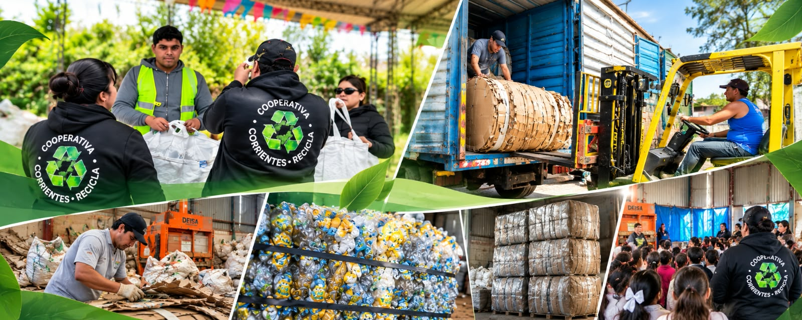

Nuestra historia
La Cooperativa de Trabajo Corrientes Recicla desarrolla actividades vinculadas con la recuperación, recolección, clasificación y acondicionamiento de materiales reciclables.
Desde sus inicios en 2015, la cooperativa trabaja para fortalecer una actividad que une el cuidado ambiental con la generación de oportunidades laborales para sus integrantes y sus familias.

Qué hacemos
Recuperamos materiales que pueden volver al circuito productivo. Para ello, las tareas comprenden la recolección, la separación por tipo de material, la clasificación y el acondicionamiento para su posterior aprovechamiento.
Este trabajo contribuye a reducir los residuos que se descartan y permite reconocer el valor de los materiales recuperables.
Nuestro compromiso
Entendemos el reciclaje como una actividad que vincula el trabajo cooperativo, la economía circular y el cuidado del ambiente. También consideramos importante la colaboración con instituciones, organizaciones y otros actores de la comunidad.